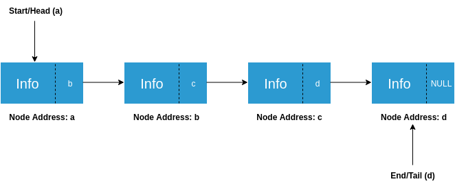

Linked list is a linear data structure where each data is a separate object (of the same data type). Linked list objects do not occupy contiguous memory locations as compared to arrays. Elements of linked lists are linked using pointers, and the elements are called Nodes.
There are three types of linked lists:
Singly Linked List
Doubly Linked List
Circular Linked List
Concept of Linked List
Need for Linked List
1. Memory Management: Arrays have fixed sizes, and unused memory or insufficient size can waste space. Linked lists efficiently manage memory by dynamically allocating space. Each node takes up only as much space as needed, and memory is freed when nodes are deleted.
2. Faster Processing: Deleting from arrays requires shifting elements, but in a linked list, we only need to update pointers, making operations like deletion faster, especially with a time complexity of O(1) for pointer updates.
Single Linked List
Each node of a singly linked list consists of two parts:
The first part stores information (data).
The second part is a pointer that stores the address of the next node.
Head is a pointer storing the address of the first node, and Tail stores the address of the last node.
Representation of Linked List Experiment

Data Type Used in Singly Linked List
To implement a singly linked list, we first need a data type to store the information. Below is an example:
Example:
struct Node{
char name[50]; // name of the student
char rollNumber[10]; // roll number of the student
Node *next; // pointer to the next node
};
What is Linked List?
Linked List vs Array
Types of Linked List
Operations on Linked List
Linked List
Implementation of Singly Linked List
Now we have the data type that our singly linked list is going to store.
Next, we need two pointers that mark the start and end of our singly linked list. Let us declare them: